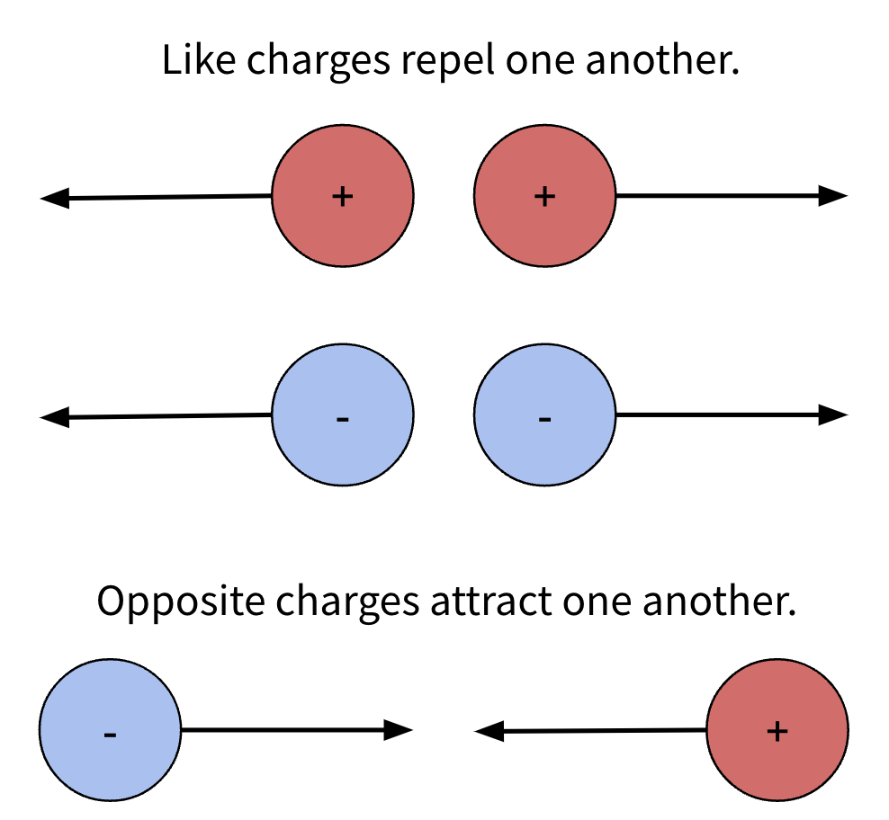

Lecture 1: Charge, Current, Potential Difference and Resistance#
Learning Objectives#
By the end of this lecture you should:
Be able to define what charge, current, electromotive force, potential difference and resistance are.
Be able to recall the equations associated with each of the terms above.
Solve problems using the associated equations.
Describe the difference between conventional current and electron current.
An Introduction to Charge#
Charge is a physical property that some particles posses. For example, an electron has a negative charge, whereas a proton has a positive charge. If an object comprises an equal amount of negative and positive charges, it is said to be electrically neutral.
Charge is measued using the unit Coulomb which is denoted as C. The charge of an electron is \(-1.602 \times 10^{-19} \, \text{C}\) and the charge of a proton is \(1.602 \times 10^{-19} \, \text{C}\). Their charges are equal and opposite.
Note
We can see that the magnitude of an individual charge is very small. As such it is often convinent to refer to an amount of charge in terms of the magnitude of the electron charge. For example, you may see a problem that states “body A has a charge of \(+2e\)”, which means it has a positive charge equal to twice that of the magnitude of the electron charge.
Charges also exert an electric force on one another. If these charges are of the same polarity, the force will be repulsive, and if they are oppositely charged, the force will be attractive.

Current#
Although we will discuss this topic in a later lecture, it is worth knowning that if a charge is placed in an electric field or magnetic field they will experience a force causing them to accelerate. In the case of a circuit, an electric field is established across between its terminals which forces electrons to move through the circuit.
This movement of charges is known as a current, which is formally defined as the rate at which charge flows between two points. This is expressed mathematically as:
where \(I\) represents the current, \(Q\) represents the charge and \(t\) represents time. From this equation we can determine the unit for current. As \(Q\) is measured in Coulombs (C) and \(t\) is measured in seconds (s), the unit of current must be Coulombs per second (C\(\,\)s\(^{-1}\)), which is also known as an Ampere (A).
Important
Current is measured in Amps (A).
Circuits#
Conventional Current#
As discussed above, in order for current to flow round a circuit, there must be a net electric field across the circuit. This may be achieved using a battery which has a positively charged terminal and a negatively charged terminal. An electric field is established between them.
In operation the negatively charged electrons will be attracted to the positive terminal and repelled from the negative terminal. This flow of charges is a current, but importantly, this is not what we refer to as conventional current.
Warning
In a circuit conventional current flows from the positive terminal to the negative terminal i.e. in the opposite direction to the flow of charges. This convention was adopted before it was understood that it is electrons that are moving through the circuit.
Electromotive Force#
In order for charges to move around a closed circuit there must be a source of electromotive force (EMF). The source of EMF may be a battery, a photovoltaic cell, generator or a thermocouple, each of which is capable of transfering one form of energy (e.g. chemical energy in the battery) into electric potential energy which is then transferred to the circuit to which it is connected.
An intuative way of thinking about this is to consider a water pump. The water pump increases the potential energy of water by pumping it uphill so it can then flow back downhill. In a circuit, the EMF source increases the electric potential energy of the charges allowing them to move around the circuit and return to their ground potential.
Electromotive Force is not a force at all and is simply defined as the energy per unit charge within a closed cell, which can be expressed mathematically as:
where \(\epsilon\) represents the EMF. From this expression we can see that the EMF has units of Joules per Coulomb (J\(\,\)C\(^{-1}\)), which is equivilent to a Volt (V). As EMF is measured in volts, it is often referred to as the “circuit voltage” or the “voltage of the circuit”. It is important to be aware of this as another another circuit descriptor is also often referred to as the voltage.
Important
Electromotive Force is measured in Volts (V).
Potential Difference#
Let us again consider our water pump analogy, but now let’s introduce a waterwheel on the downhill path. If we neglect other energy loses, we can say that the kinetic energy of the flowing water is transferred to the waterwheel in order to make it turn. This is also the case in a circuit - as current flows through a circuit component, for example a light bulb, energy from the charges will be transferred to the bulb and cause it to illuminate. Therefore the potential energy of each charge is different on each side of the bulb. This is known as the Potential difference.
The potential difference can be expressed mathematically as:
You should note that this equation is very similar to that of the EMF. The key difference between the potential difference and the EMF is one corresponds to a charge gaining energy, whereas the other corresponds to a charge losing energy.
Again, the potential difference also has units of Joules per Coulomb or Volts. As such the potential difference is often referred to as “the voltage across the component” or the “voltage drop”.
Important
Potential Difference is measured in Volts (V).
Conservation of Energy
Conservation of energy dictates that the voltage drop across each component of a circuit must equal the EMF of the circuit i.e. the energy gained by the charges via the source of EMF is fully disipated across the circuit components.
Resistance#
For a given circuit we find that if we increase the supply voltage (EMF) we will measure a corresponding increase in current. If this relationship is linear, this relationship can be expressed using the equation of a line:
We would naturally expect that when there is no supply voltage that there would be no current. Therefore \(c\) in this equation is simply equal to zero. Let’s plot the current as a function of supply voltage:
The line of this plot has the equation:
where \(m\) represents the gradient of the line and the constant of proportionality that relates voltage to current. This constant of proportionality equal to the inverse of the resistance, hence:
and
This is known as Ohm’s law.
This resistance is a measure of how much a component in a circuit impedes the flow of current through it. For a given voltage, a lower resistance will result in a greater current as shown in the figure below.
From the relationship \(V=IR\) we can derive the units for the resistance:
Resistance is measured in volts per ampere (V\(\,\)A\(^{-1}\)), which we call the Ohm (\(\Omega\)).
Important
Resistance is measured in Ohms (\(\Omega\)).
Circuit Symbols#
As part of this unit you will need to become familiar with using circuit digrams. The figure below shows a useful summary of what the different symbols in a circuit diagram represent. Additionally, it a lab setting, although we take care to seperate resistors by their resistance, they often get mixed together so it is useful to be able to “read” a resistor and determine its value of resistance.
Questions#
Warning
Atempt the questions before looking at the solutions otherwise you will not learn!
Students who look at mark schemes without going through the motions of a question often think “yes, that’s what I would have done”, but are then unable to perfom on exams as the knowledge was never consolidated through practise.
Question 1#
\(130\, \text{C}\) of charge flows through a copper wire over a \(12.0\) second period. Determine what the current through the wire is.
Q1 Hint
Use the relationship between current, charge and time.
Q1 Solution
\(I = \frac{\Delta Q}{\Delta t} \)
\(I = \frac{130}{12} \)
\(I = 10.8 \, \text{A}\)
Question 2#
How much charge flows through a wire in \(90\) seconds if the current is measured to be \(3.0 \, \text{A}\)?
Q2 Hint
Use the relationship between current, charge and time.
Q2 Solution
\(I = \frac{\Delta Q}{\Delta t} \)
\(\therefore \Delta Q = I\Delta t \)
\( \Delta Q = 3.0 \times 90 \)
\( \Delta Q = 270\, \text{C}\).
Question 3#
If \(45.0\, \text{C}\) of charge transfers \(135\, \text{J}\) of energy between two points of a circuit, what is the potential difference between these points?
Q3 Hint
How is potential difference across a component defined?
Q3 Solution
\( PD = V = \frac{\Delta E}{\Delta Q} \)
\( V = \frac{135}{45.0} \)
\( V = 3.00 \, \text{V}\)
Question 4#
The resistance of a circuit element is measured as \(12\,\Omega\). If \(30\,V\) of EMF is supplied, what is the current flowing through the circuit?
Q4 Hint
How is Ohm’s law expressed as an equation?
Solution
\( V = IR \)
\( \therefore I=\frac{V}{R} \)
\( I = \frac{30}{12} = 2.5 \, \text{A}\)